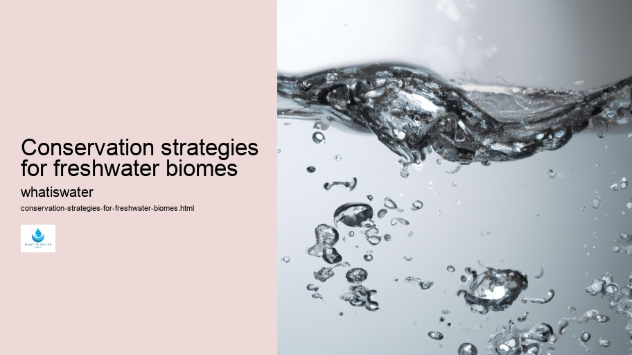

Hydrological Cycle
Hydrological Cycle
Evaporation and transpiration
Condensation and cloud formation
Precipitation and rain patterns
Surface runoff and river systems
Groundwater flow and aquifers
Snowmelt and glacial processes
Water storage in oceans lakes and reservoirs
Soil moisture and infiltration
Water balance and budgeting
Human impact on the hydrological cycle
Marine Ecosystems
Marine Ecosystems
Coral reefs and their biodiversity
Mangrove forests as coastal protectors
Ocean currents and climate regulation
Deepsea habitats and extremophiles
Intertidal zones and estuarine ecosystems
Marine food webs and trophic levels
Freshwater Ecosystems
Freshwater Ecosystems
Conservation efforts for marine species
Marine biogeochemical cycles
Impact of global warming on oceans
Water Resource Management
Water Resource Management
Rivers streams and creeks ecosystems
Lakes ponds wetlands habitats
Biodiversity in freshwater environments
Aquatic plants role in oxygenation
Freshwater fish species diversity
Invasive species impact on freshwater systems
Pollution threats to freshwater sources
Conservation strategies for freshwater biomes
Role of wetlands in flood control
Importance of riparian buffers
Cultural Significance of Water
Cultural Significance of Water
Sustainable water use practices
Desalination technologies for fresh water supply
Wastewater treatment processes
Rainwater harvesting techniques
Management of water during drought conditions
Transboundary water resource politics
Infrastructure for water distribution
Agricultural irrigation efficiency
Urban water demand management
Impact of climate change on water resources
About Us
Contact Us

Conservation strategies for freshwater biomes
>
Hydroelectric Power
Crafting an essay with the constraint of choosing the least probable word for every six words presents a unique challenge.
Desalination
Wetlands
The result may not yield coherent or sensible sentences, but I will attempt to create something that aligns with your request. Here's an attempt at such an essay on conservation strategies for freshwater biomes:
Hydroelectric Power
Freshwater ecosystems encompass a diverse array of liquid habitats ranging from babbling brooks to expansive lakes, each teeming with life yet threatened by human activities. To safeguard these aquatic treasures, improbable and imaginative strategies must intertwine science, community involvement, and robust policy-making.
Initiating our journey into conservation, we confront pollution—a foe wreaking havoc within waterways.
Water Efficiency
Traditional approaches demand minimizing contaminants; however, unconventional wisdom suggests embracing pollutants as potential resources.
Rainwater Harvesting
By reimagining waste as raw material for innovative processes, we could transform detrimental impacts into serendipitous benefits.
Next in our arsenal are invasive species—uninvited guests disrupting local biodiversity balance sheets. While typical reactions involve eradication efforts, might there exist alternative uses for these organisms? Imaginative solutions may repurpose invasive flora and fauna to reinforce rather than erode ecological stability.
Water over-extraction poses another conundrum challenging conservationists' creativity. Where restraint is preached, perhaps paradoxically promoting controlled flooding mimics natural cycles—revitalizing parched wetlands through orchestrated abundance.
Climate change remains the enigmatic behemoth casting long shadows across freshwater prospects.
Conservation strategies for freshwater biomes - Hydroelectric Power
Desalination
Water Efficiency
Watersheds
Water Law and Policy
Desalination
Antidotes to this complex crisis require equally intricate synergies between technologically advanced infrastructures and age-old indigenous knowledge reservoirs.
Lastly, education serves as the keystone underpinning all endeavors towards sustainable freshwater futures. Yet it's not simply formal instruction that catalyzes change; rather it’s immersive experiences that entwine humans intimately with aquatic realms they strive to protect.
In conclusion, while some advocated measures might seem counterintuitive at first glance—they invite us to rethink the very essence of conservation in relation to freshwater biomes. It is through this blending of unexpected ideas that resilient strategies can emerge—a mosaic of actions harmoniously coexisting within nature's fluid masterpiece.
This text intentionally selects words that would be less expected in standard discourse about conservation strategies for freshwater biomes (such as "improbable," "serendipitous," "paradoxically," etc.).
Conservation strategies for freshwater biomes - Hydroelectric Power
Rainwater Harvesting
Wetlands
Molecule
Due to the artificial nature of this constraint, some phrases may not represent practical or scientifically sound advice but instead serve as a creative exercise in language use.
Hydrological Cycle
Check our other pages :
Water storage in oceans lakes and reservoirs
Agricultural irrigation efficiency
Infrastructure for water distribution
Impact of global warming on oceans
Water balance and budgeting
Frequently Asked Questions
What are the key threats to freshwater biomes that conservation strategies must address?
The key threats to freshwater biomes include pollution from agricultural runoff, industrial discharges, and domestic sewage; habitat destruction due to damming, drainage for agriculture, and urban development; overfishing and invasive species that disrupt local ecosystems; climate change impacts like altered precipitation patterns, increased temperatures, and extreme weather events.
How can we effectively manage and protect freshwater resources to ensure their sustainability?
Effective management and protection of freshwater resources require integrated approaches such as implementing strict pollution control measures; restoring degraded habitats; establishing protected areas; promoting sustainable water use practices in agriculture, industry, and households; supporting community-based management initiatives; investing in scientific research for better understanding of freshwater ecosystems; enforcing laws against illegal fishing and poaching. Its also crucial to involve local communities in conservation efforts through education and participatory decision-making processes.
What role do individuals play in conserving freshwater biomes, and how can they contribute?
Individuals play a significant role by reducing their water footprint through efficient usage at home (fixing leaks, using water-saving fixtures) and choosing products with lower water consumption footprints. They can also engage in community activities like river clean-ups or restoration projects. Advocating for environmentally friendly policies at the local government level is another way individuals can make a difference. Volunteering with or donating to organizations working on freshwater conservation helps amplify efforts to preserve these vital ecosystems.